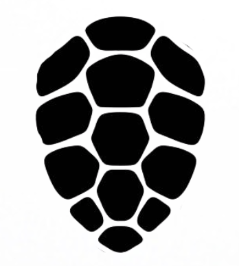

CARAPACE-CODE [ACCÈS BIOMÉTRIQUE]
Identifiez la séquence correcte de scutes (écailles) pour valider l'accès.

Scutes sélectionnées : / 3
ACCÈS AUTORISÉ.
Vous pouvez ouvrir l'enveloppe B - Dortoir du personnel.
Vous pouvez ouvrir l'enveloppe B - Dortoir du personnel.